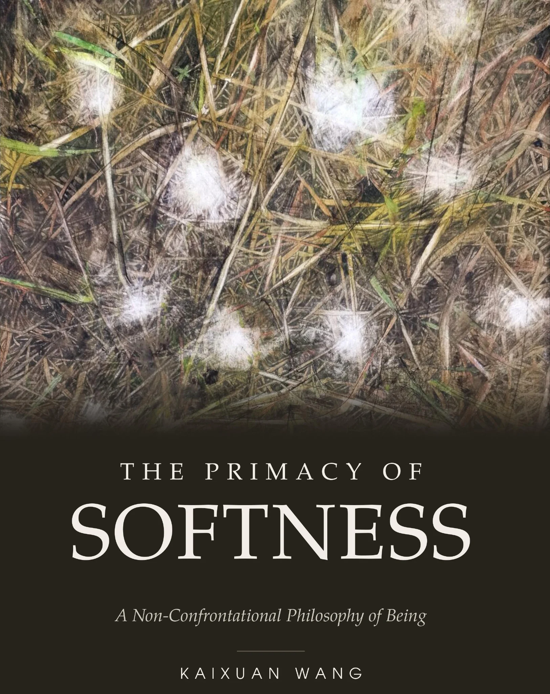

English Edition
THE PRIMACY OF SOFTNESS
A Non-Confrontational Philosophy of Being
Published · Available on Amazon
Developed through long-term artistic practice, The Primacy of Softness examines relation, continuity, and non-confrontational strength. Its concepts arise from watercolor and lived experience, then return to painting as questions to be tested and revised.
Read Preview: Front Matter & Chapter OnePublished and available on Amazon.
Sample provided for personal reading only. All text and artwork are protected by copyright. Reproduction, distribution, commercial use, modification, and use for AI training are prohibited without written permission.
英文版
THE PRIMACY OF SOFTNESS
A Non-Confrontational Philosophy of Being
已出版 · Amazon
《The Primacy of Softness》源于长期的艺术实践，讨论关系、延续与非对抗性力量。书中的概念从水彩与生命经验中产生，再返回绘画，成为需要由实践检验和修正的问题。
阅读全文试读：前置内容与第一章本书已出版并在 Amazon 上架。
本试读内容仅供个人阅读。书中文字与作品均受著作权保护，未经书面许可，不得复制、传播、商用、修改或用于人工智能训练。